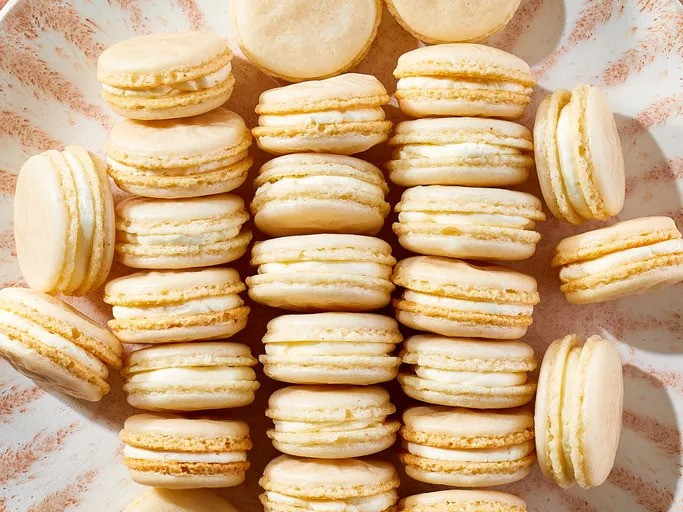

Home
Macarons

Description
A macaron or French macaroon ( MAK-ə-ROON) is a sweet meringue-based confection made with egg white, icing sugar,
granulated sugar, almond meal, and often food colouring,
Since the 19th century, a typical Parisian-style macaron has been a sandwich cookie filled with a ganache,
buttercream or jam. As baked, the circular macaron displays a smooth, square-edged top, a ruffled
circumference—referred to as the "crown" or "foot" (or "pied")—and a flat base. It is mildly moist and easily
melts in the mouth. Macarons can be found in a wide variety of flavours that range from traditional sweet such
as raspberry or chocolate to savoury (as a foie gras).
Ingredients
- 3 egg whites
- 1/4 cup white sugar
- 1.75 cups confectioners' sugar
- 1 cup finely ground almonds
Steps
- Line a baking sheet with a silicone baking mat.
- Beat egg whites in the bowl of a stand mixer fitted with a whisk attachment until foamy. Add white sugar and
beat until egg whites are glossy, fluffy, and hold soft peaks.
- Sift confectioners' sugar and ground almonds in a separate bowl; quickly fold almond mixture into egg
whites, about 30 strokes.
- Spoon a small amount of batter into a plastic bag with a small corner cut off and pipe a test disk of
batter, about 1 1/2 inches in diameter, onto the prepared baking sheet. If the disk of batter holds a peak
instead of flattening immediately, gently fold batter a few more times and retest.
- When batter is mixed enough to flatten immediately into an even disk, spoon into a pastry bag fitted with a
plain round tip. Pipe batter onto the baking sheet in rounds, leaving space between the disks. Let piped
cookies stand out at room temperature until they form a hard skin on top, about 1 hour.
- Preheat the oven to 285 degrees F (140 degrees C).
- Bake cookies in preheated oven until set but not browned, about 10 minutes.
- Let cookies cool completely before filling, about 30 minutes.